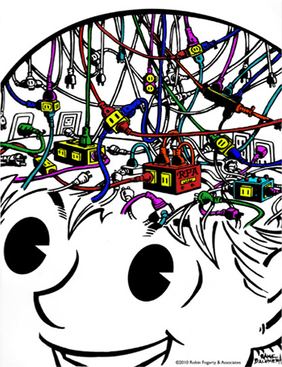
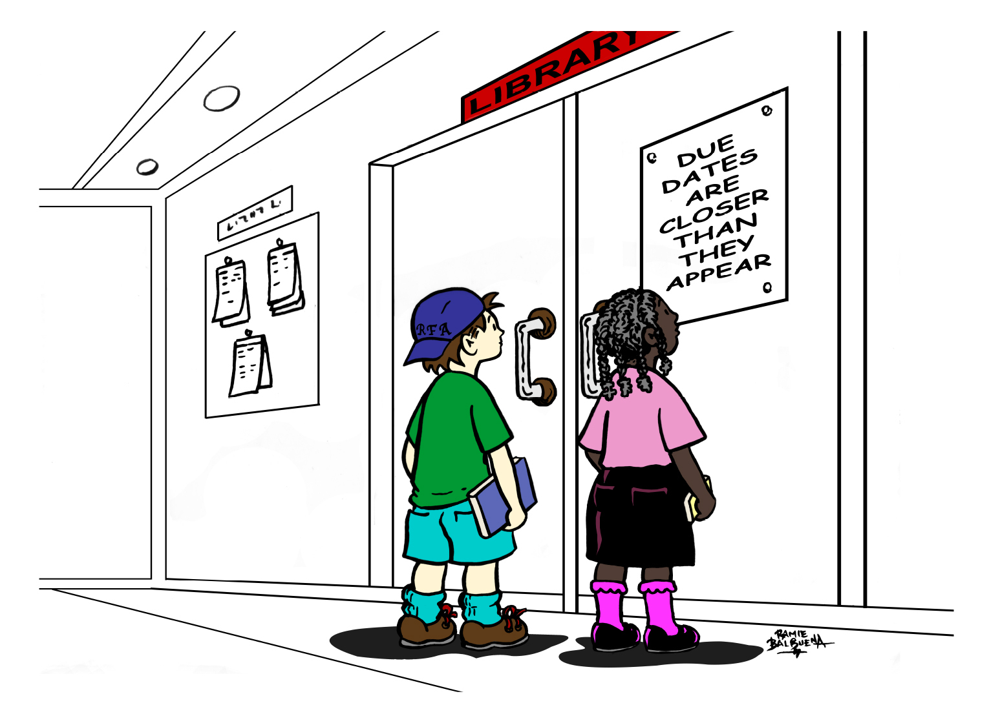
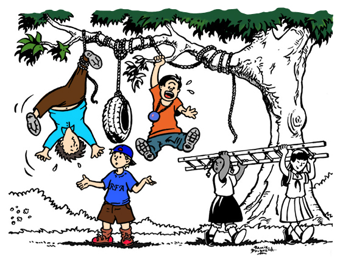
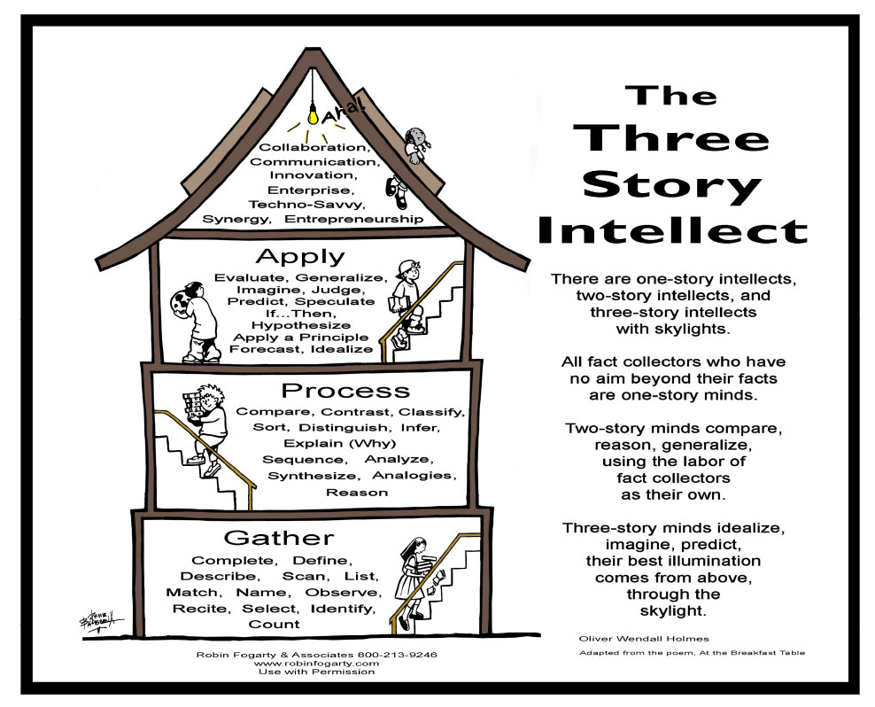
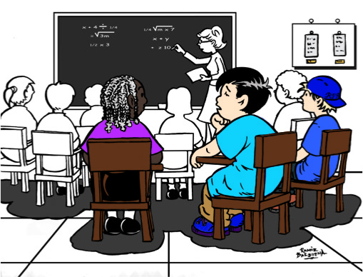

21st Century Learning
21st Century High Tech, High Touch, High Thought Classrooms
Unlocking Student Talent: Motivate, Practice, Coach
PDF
Unlocking student talent is an approach to personalizing learning? In brief, it’s about putting kids first by giving them “voice and choice” in their own learning. Integrated into the 21st Century classrooms of differentiated learning that vary the “pace and face” of instruction to target the individualized differences. These purposefully-designed student-centered classrooms, encapsulate the accepted concept of personalizing learning. It is when these three components intersect, differentiation, individualization and student-centeredness.This is the next generation of the differentiated classroom and the added refinements are clearly outlined: Personalized learning adapts a metacognitive approach that fosters self-direction, self- monitoring and self-evaluation. In essence, personalized learning is student ownership. However, this new model is guided by motivating factors that ignite, invigorate and instill the learning, as well as fostering, metacognitive, reflective, coaching and feedback. Personalized learning means greater student achievement through self-determined change (interests), challenge (goals) and choice (methods). In short, the thrust is to engage students in ways that they become the “stewards of their own learning”.
Book:Unlocking Student Talent: The New Science of Developing Expertise-2017-Fogarty, Kerns, Pete
Objectives and Outcomes:
- Shifting Learning to a Personalization Approach
- Igniting Emotions to Motivate Students
- Coaching Deliberate Practice with “Reach and Repeat”
- Understand: Practical k12 classroom strategies to promote metacognition
- Practice: Techniques for student self-awareness, self-initiative, self-direction
- Apply: The tools metacognitive reflection when students plan, monitor and evaluate
Metacognition
PDF How do we prepare our students for the test of life? We teach them how to learn when they are not being taught! In other words, we give them the gift of self-reflection, self-awareness, self-initiative, self-direction, self-assessment and self-regulation – the gift of knowing when they know, and when they don’t know. Metacognition: The Neglected Skill Set for Empowering Students, is written with the teacher in mind. It is more practical than theoretical, but most definitely grounded in research findings and connected to emergent data. With the 30 ready-to-use metacognitive strategies in this book, teachers will deepen learning for their students through explicit reflections on planning, monitoring and evaluating their own work. As students learn how to “think about their own thinking”, they become more aware and, thus, better able to make adjustments on their own work. They gain a sense of ownership, and teachers get results they can count on through students empowerment. Metacognition is like magic for 21st century classrooms – it changes student behaviors before your eyes.
Book: Metacognition: The Neglected Skill Set for Empowering Students
Objectives and Outcomes:
- Understand: Practical k12 classroom strategies to promote metacognition
- Practice: Techniques for student self-awareness, self-initiative, self-direction
- Apply: The tools metacognitive reflection when students plan, monitor and evaluate
Thinking About Thinking in IB Schools: How We Know What We Know.
PDF The quintessential question, “How do we know what we know?” seems to drive the quest for high performing learners to learn more, dig deeper, explore, investigate and in the end, be able to validate and justify. With rigorous principles paralleling the International Baccalaureate curriculum framework, (as well as other recognized curriculum frameworks) drive that inquiry. While “knowledge comes on the coattails of thinking, the Theory of Knowledge approach extends this, as students dig into the evidence-based scenarios about, ”How we know what we know”. This professional learning enhances the work of students with the depth and breath of mega-thinkers. It supports the remarkable curriculum work, with complementary discussions and exercises that provide that added, oomph! Grounded in principles of curiosity, confidence, connectedness, reasoning, communication, reflection and open-mindedness, practical threads of thinking, practicing and performing are ever-present. Empower students with lifelong skills that will impact every sector of their lives.
- Objectives and Outcomes:
- Learn principles to guide rigorous inquiry
- Practice explicit, complex thinking skills
- Use metacognitive reflection consistently
Book: Thinking about Thinking in IB Schools: How We Know What We Know-Fogarty and Pete
High Tech, High Touch, High Thought
PDFReal world application drives 21st Century, academic learning. In this generation, students don’t learn to do they do to learn. They live in a fast-paced society and are impatient with the slow and steady rhythm of the traditional classroom. How do significant curriculum shifts toward a more relevant, rigorous, inquiry-oriented approach occur within this assessment-driven culture? How do teachers guide kids to dig into authentic problems? How do they support “high-tech” applications in a digital-rich classroom? How do they foster collegial, “high-touch” teamwork on projects and papers? How do they challenge students with rigor in “high-thought” explorations, investigations, and experimentations? “The times, they are a changing”, and they are changing at breakneck speed. How do we, as leaders, retool schools to meet the challenges in relevant ways?
- High Tech-Communication
- High Touch-Collaboration
- High Thought-Creative and Critical Thinking
Book: How to Teach Thinking Skills within the Common Core: 7 Student Proficiencies
Testimonial:
Nuggets of info and some great tools . . .the takeaway strategies that can be applied in the classroom immediately w/o a lot of changes to lessons will be all helpful in adding deeper critical thinking. Joey Dale, Middle School.
PBL in a Nutshell
PDF It's time to transform instruction with enriched Problem-based Learning in a Nutshell Here is the big secret about PBL . . . It’s not that complicated! Moving toward relevance in the curriculum that uses 21st Century, real-world applications, student inquiry models are front and center-problem-based, project, and service learning experiences are among the most frequently cited. It’s efffective to get started with tools already familiar to teachers today: graphic organizers, essential questions, rich and relevant content, rigorous thinking skills, digital-rich tools for searching and researching, collaborative team work and presentation skills. Simply put: PBL is like DIY (Do It Yourself) projects- Do It-to-Learn-It, 21st Century methodology, rather, than Learn It-to-Do-It, 20th Century traditions.
- Objectives and Outcomes:
- Develop Question-Collect, Reflect, Select
- Gather Resources- Search, Research, Network
- Organize Information-Notes, Graphics, Outline
- Create Evidence-Project, Problem-based, Service Learning
- Present Findings-Product, Presentation, Performance
- Assess Learning –Traditional, Portfolio, Rubrics
Book: EVERYDAY PROBLEM-BASED LEARNING
Testimonial:
Great job of not being an educational “expert” yet, being an entertaining presenter. Wish more people had you background and experience to share with teachers. Alice McKay, High School English.
Preparing for the Test of Life: Teach Them to Think
PDF Using the Three Story Intellect to assure teachers that students are moving through the three levels of thinking-gathering, processing and applying, students learn to think more deeply. As they become more aware of their thinking, confidence increases dramatically, and the shift from the teacher-directed classroom environment to a student-centered culture of respect, responsibility and reliability is the ultimate goal. Learn how to teach kids to think, critically and creatively. Help students begin earlier, rather than later, to adapt self-dispositions of mindfulness that prepare them for test of life. Grounded in 21st Century thinking processes: productive problem solving, mindful decision-making and creative innovation, students develop awareness and control of their own actions, words and deeds. (Can substitute DOK’s or Bloom’s Taxonomy to align to district).
- Objectives and Outcomes:
- First Story Thinking-Gather
- Second Story Thinking-Process
- Third Story Thinking-Apply
Book: How to Teach Thinking Skills Within the Common Core
Testimonial:
First and foremost, Robin and Brian, THANK YOU, THANK YOU, THANK YOU! You really provided a new set of eyes for our Instructional Leaders. Your professional learning engagement is literally the TALK OF THE TOWN TODAY! Folks have actually thanked me for PD, which in my world, does not happen all that often!!! Even have Administrators asking for professional books/resources for their toolboxes!!! Talk about "use the next day strategies!" Saw it in action for myself today! Here is how you know that you hit a home run...we held a mini-conference today and the presenters left your session on yesterday and went back and reworked their presentations for today.Marcella Heyward-Evans, EdD Chief Instructional Officer.
Who’s Doing the Talking: Is the Brain Engaged?
PDF Invite! Excite! Ignite! is about that mysterious, magical, confounding, frustrating, exhilarating, important, and misunderstood profession of the classroom teacher. Three million teachers currently work with 50 million students in US k12 classrooms. NCES.Gov, 2015. Among these dedicated teachers, many find that their most valuable help, often comes from other teachers, the teacher across the hall or down the wing a ways, or through chance meetings in the teacher workroom. This book is for them. It consists of ideas, strategies, quotes and notes from thousands of teacher-to-teacher interactions.
- Objectives and Outcomes:
- Learn how empower with student ownership
- Foster student interactions for engaging collaborations
- Revisit best practices through strategies that work
Book: Invite! Excite! Ignite! 13 Principles of Teaching, Learning and Leading
Testimonial:
It was such a pleasure to see you work with our teachers last week. What a very talented and professional pair you are. I know our district's students will benefit from your shared expertise. I am so glad we found you.- Shelly Smede-Director of Staff Development Idaho Falls, ID.